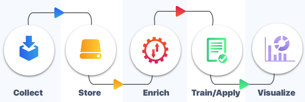

Professional End-to-End ML Pipeline using a Practical Example
It includes a real-world example of a machine learning pipeline from start to end. Data interpretation, data visualisation, feature engineering, model training, hyper parameter tweaking, model testing, and model interpretation were just a few of the themes discussed in the blog.
Hosting a Machine learning model in Heroku
Machine learning model deployment, also known as putting models into production, refers to making your models available to end users or systems.
The deployment of machine learning models, on the other hand, is complicated.
This blog intends to help you get started with leveraging the Heroku platform to put your trained machine learning models into production.
Work Experience
ICU Medical|Cybersecurity InternMay 2021 - Nov 2021
Developed a BiLSTM-CRF sequence annotation model for identifying named entities in vulnerability descriptions.
Developed an Ensemble of Naive-Bayes using an LCN(Local classifier per Node) strategy and
Ensemble of Content-Based Ranking and Neural Networks for solving a Multi-label Hierarchical DAG(direct acyclic graph) with NMLNP
(nonmandatory leaf node prediction) classification of vulnerability description.